풀숲은 웅크린 채 걸어 들어가면 자동 은폐됩니다. 플레이어용 ‘들어가 숨기’ 선택지는 없앴습니다. 기절한 사람을 운반해 풀숲에 숨기는 동작은 유지합니다.
실제 게임 동작을 통제된 조건에서 촬영한 브라우저 원본입니다. PixelFX 효과는 작은 크기와 낮은 광량으로 적용했습니다. 여덟 종류가 이미지 한 장을 공유합니다.
게임 실행 · 풀숲·효과 검사 · 회귀 검사 기록 · 터치 튜토리얼 완주
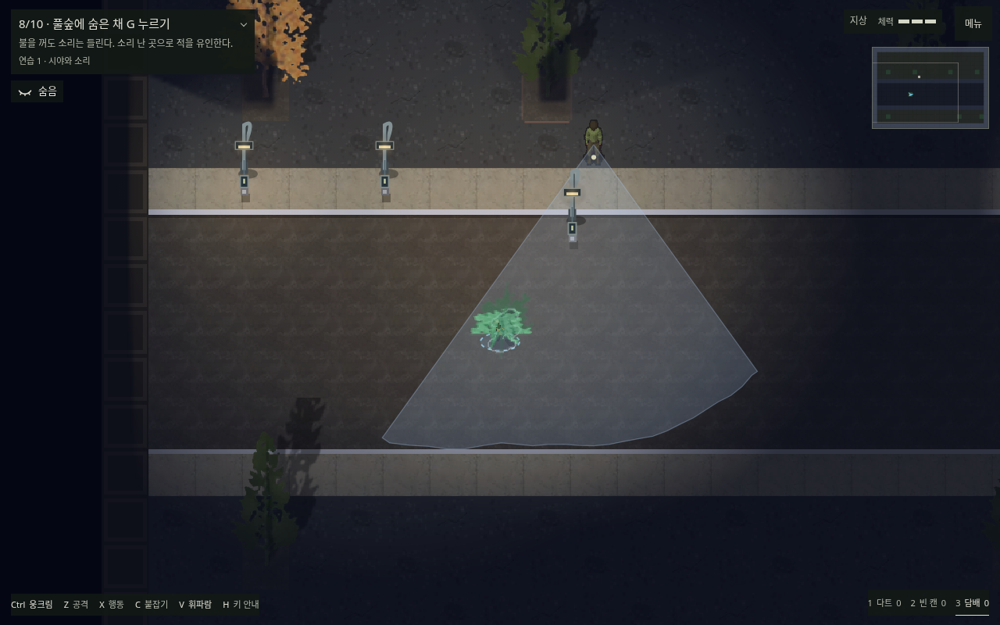
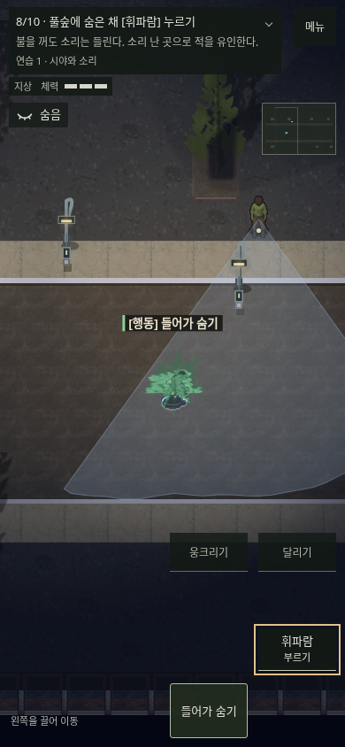
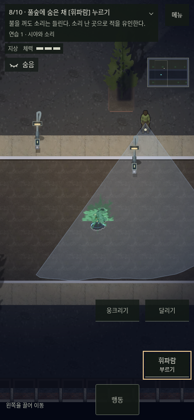
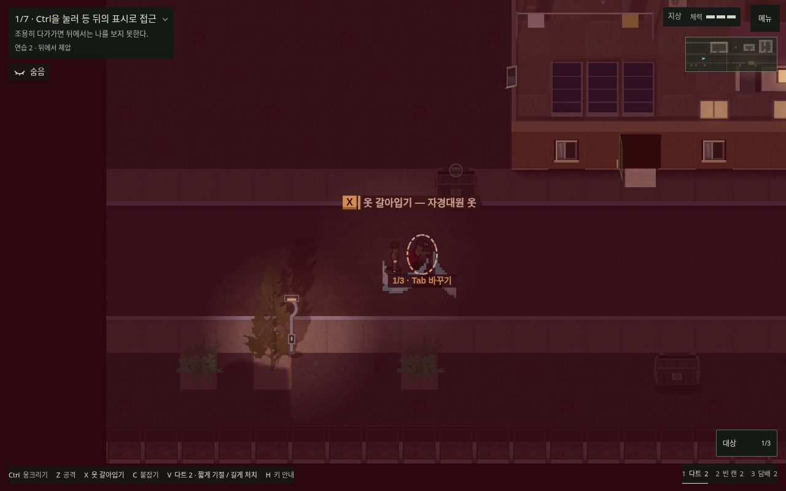
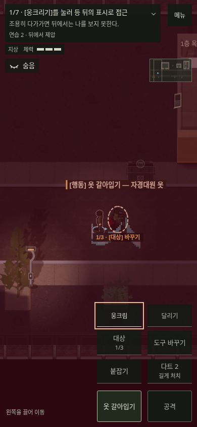
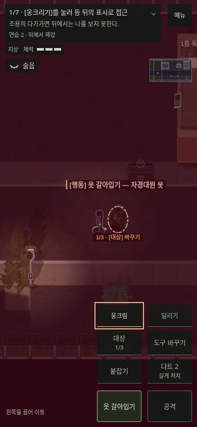
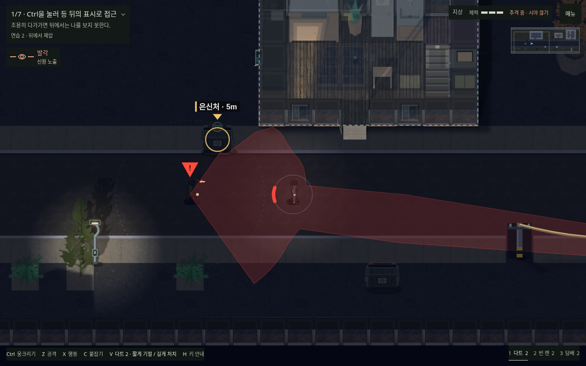
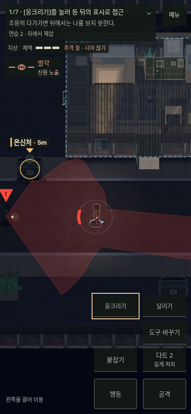
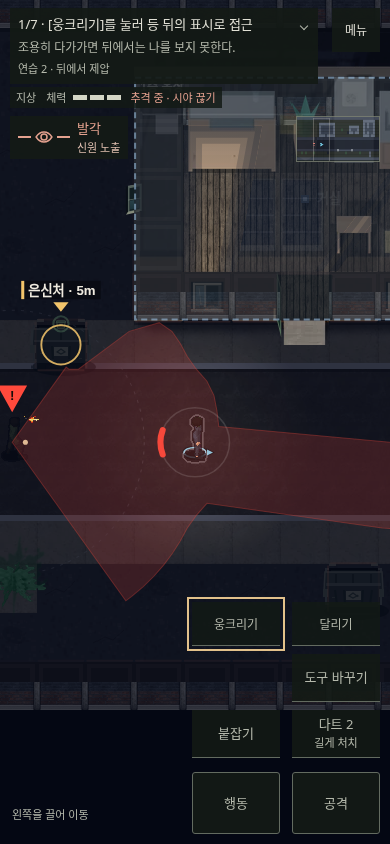
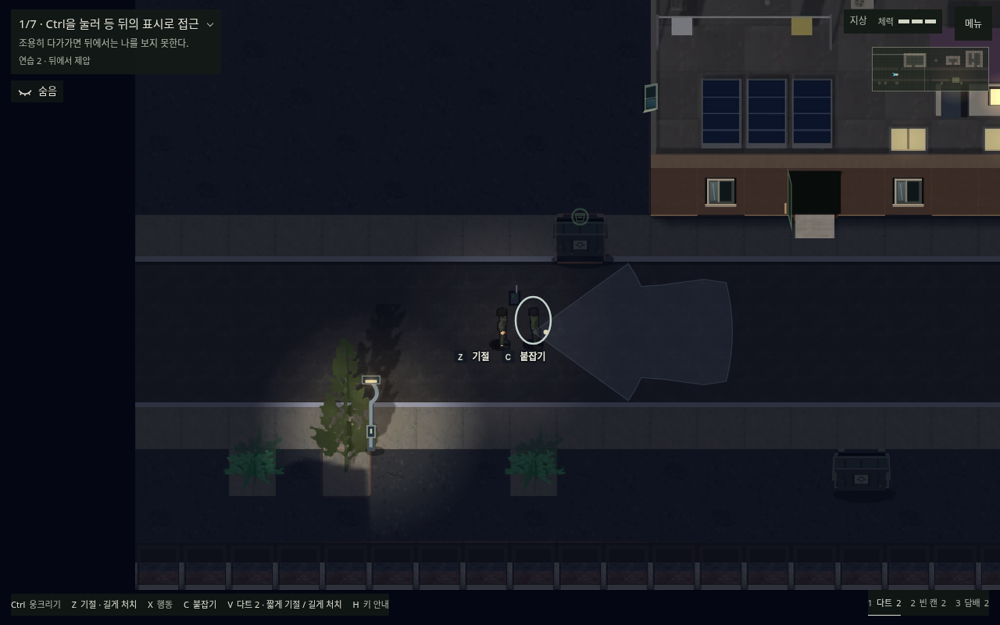
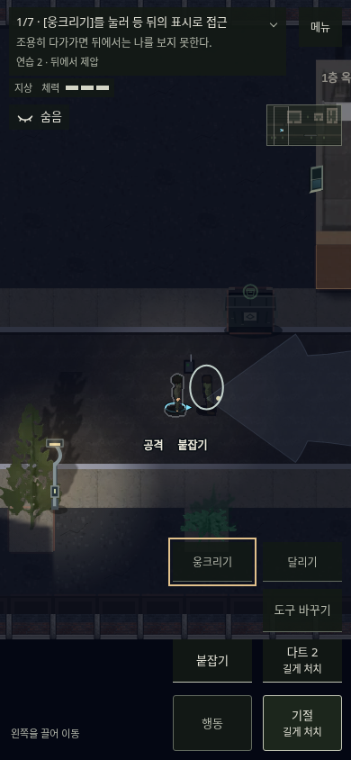
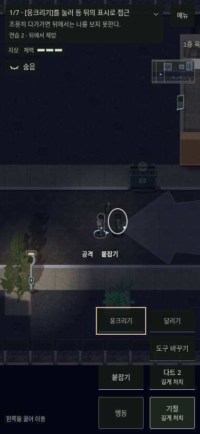
아래는 축소·합성 전 원본 크기의 검토용 프레임입니다. 게임에서는 작은 아틀라스 프레임을 사용합니다.
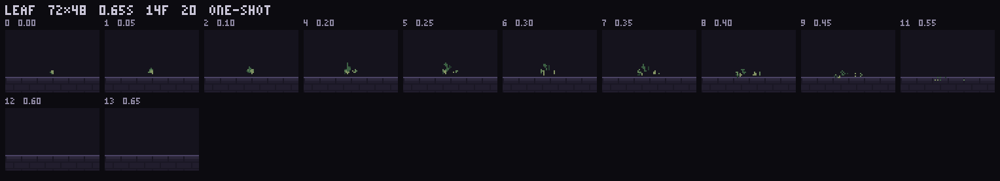
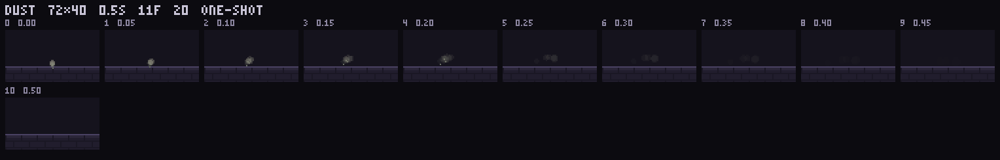
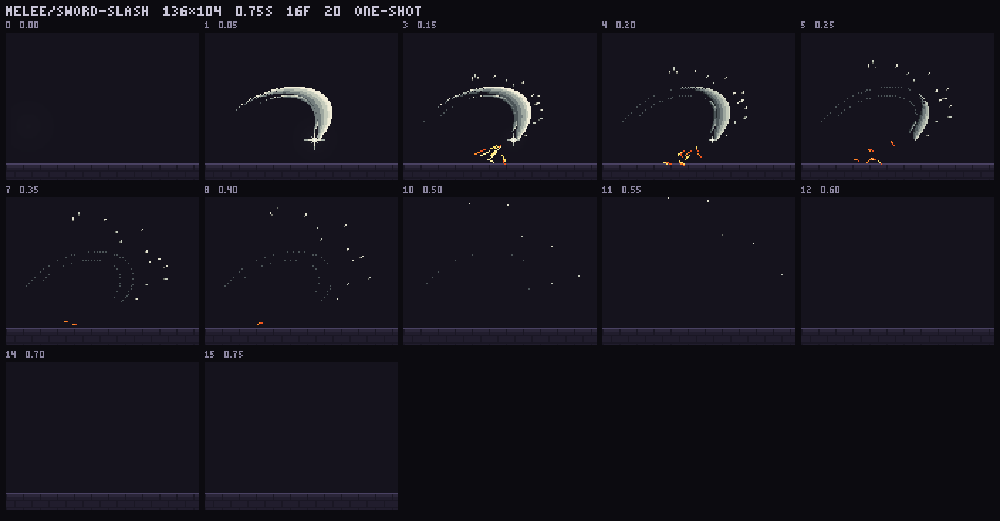
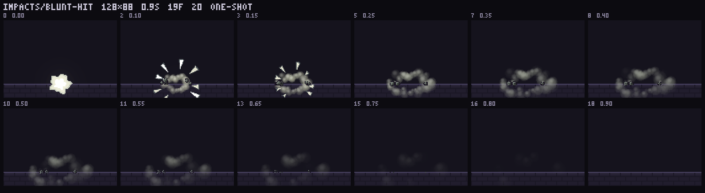
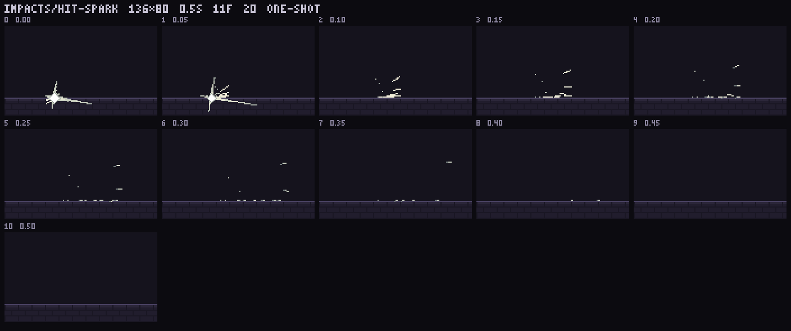
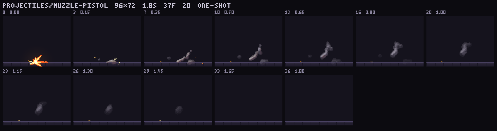
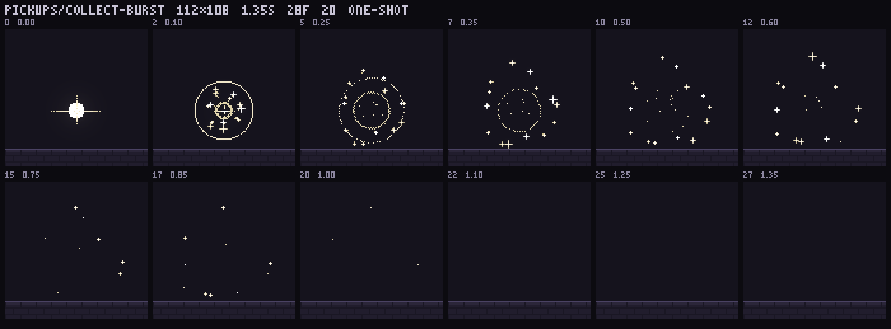
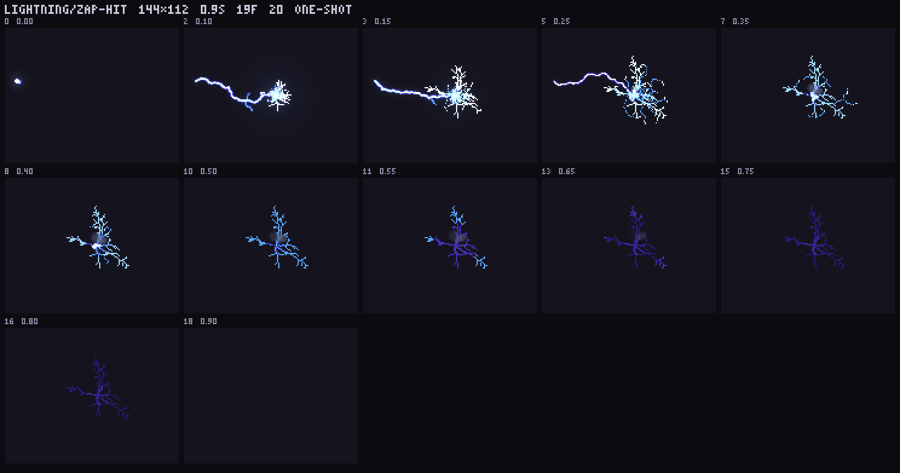